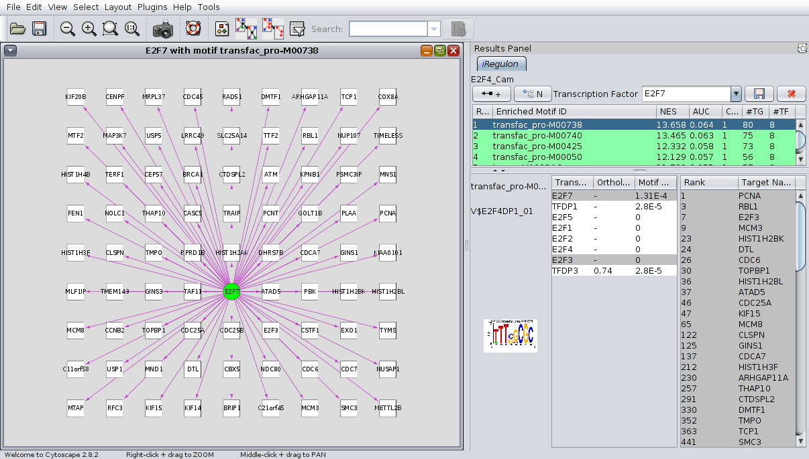

The results are shown in the results panel. This panel will be added to the left of your Cytoscape screen.
The panel is divided into two. The part above is the master part. This part starts with the title of the job (your job name).
Under the title the toolbar is visible. Here there are 2 buttons that aren't click-able. This is because no motif is selected yet. The same for the box of the transcription factor. Furter there are 2 button clickable. These are the save button (saves this results, only these results as a .ctf) and the close button (closes this tab of the results panel, doesn't save your results).
Under this toolbar the searchbar is visible. With the combobox it's possible to select the search-mode: search on motifs or on there transcription factors. The next box is the search-field. The search-pattern typed here is used for the filtering. When the pattern is in the motif or transcription factor, a green check is visible in the table (otherwise a red cross). The search pattern isn't case sensitive, but doesn't support wildcards (like *).
Under this toolbar a colorfull table is visible. This table is the motif table. Each row represents a motif, motifs with the same color are part of the same cluster. The columns are:

When a motif is selected the view is updated. Started with the master panel. If there is a transcription factor, the first 2 buttons of the toolbar becomes click-able. Also, when right-clicked on the table, a pupop menu is shown. These all are draw options (see drawing TFs and TGs). The box of the transcription factor is also selectable. In this box you can select the needed transcription factor or type your own.
The panel below the master panel is called the detail panel. This panel shows a detail of the selected motif (motif that is selected in the table of the master panel). In this panel is seperated into 3 columns.
The first one has 3 rows. The first row is the motif name. The second row is the description of the motif. The third row is the LOGO of the motif. Each row has a tooltip that pops up when the mouse stands on them. This tooltip shows a better readable version of the information.
The second column is a table of the transcription factors. Each transcription factor has a name, a orthologous identifier and a motif similarity FDR. Moving the mouse on the orthologous identifier or the motif similarity FDR will provide more information in a toolbox (if more info is available). Right-clicking on the selected transcription factor will give a summary of the motif, and the transcription factor. If this transcription factor has a similar motif, comparison between the motifs can be done here.
The third column is a table of the target genes. These target genes has a rank and a name.
Gray rows in the transcription factor and the target gene table indicates genes that are in the current selected network.

For visualising the transcription factors(TFs) and the target genes(TGs) there are three possibilities:
This option will add all the target genes and the selected transcription factor to the current network. Edges will be add to the network between the transcription factor and the target genes. The selected view won't be changed.
This option will create a new window in the view, and create a new network. The name of the new network is the name of the selected transcription factor with the name of the selected motif. The selected transcription factor and all target genes will be shown. Also the interaction between these (between the TF and the TG) is drawn. This is visualised in the iRegulon Visual Style. This style draws all TGs as a with square. The TF is shown as a green eclipse. The interactions are drawn with an arrow from the TF to the TG. Edges with the same color has the same motif.
This option will only draw interactions (edges) on the current network. There won't be added any nodes. If the selected transcription factor isn't in the current network then no edges will be drawn. The selected view won't be changed.